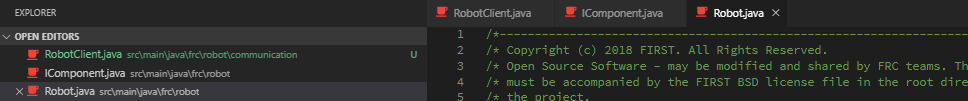

This is a quick startup guide on basic programming. It will hopefully cover the basic knowledge needed to get started programming. The guide will not cover the structure and rules that are used in our robot code. To see more about our specific code, see the [INSERT ROBOT CODE GUIDE].
TODO: Definitions are not helpful if a. they cannot be linked to and b. if there isn’t one for all the computer-y words. Think about removing this section / integrating it into other parts.
It is good to know at least a few words that are used in programming so when looking up answers, you know what the answers are referring to. Feel free to skip this bit if you think you already know most of the definitions.
Programming Language: A language that the computer can understand. Think of it as English vs French vs Japanese. Each language is used to tell the computer instructions but the way they achieve this can be quite different.
Example:
Java - HelloWorld.java
public class HelloWorld {
public static void main(String[] args) {
System.out.println("Hello world!");
}
}
Python - HelloWorld.py
print "Hello, World!"
As shown, there is quite a big difference between each implementation but they both do the same thing in the end. If you want to see a whole bunch of example in many different languages, look no further then Rosetta Code. It’s a website dedicated to showing “solutions to the same task in as many different languages as possible.“
Compile: This means converting the programming language into instructions that the computer can understand. This is usually binary code, also referred to as machine code. Something called a compiler takes the programming language code and turns it into ones and zeros (binary).
Example:
c code:
int main(int argc, char *argv[]) {
printf("Hello World");
}
assembly code:
(gdb) disas main
Dump of assembler code for function main:
0x00401410 <+0>: push %ebp
0x00401411 <+1>: mov %esp,%ebp
0x00401413 <+3>: and $0xfffffff0,%esp
0x00401416 <+6>: sub $0x10,%esp
0x00401419 <+9>: call 0x401950 <__main>
0x0040141e <+14>: movl $0x405044,(%esp)
0x00401425 <+21>: call 0x403a90 <printf>
0x0040142a <+26>: mov $0x0,%eax
0x0040142f <+31>: leave
0x00401430 <+32>: ret
0x00401431 <+33>: nop
0x00401432 <+34>: nop
0x00401433 <+35>: nop
0x00401434 <+36>: xchg %ax,%ax
0x00401436 <+38>: xchg %ax,%ax
0x00401438 <+40>: xchg %ax,%ax
0x0040143a <+42>: xchg %ax,%ax
0x0040143c <+44>: xchg %ax,%ax
0x0040143e <+46>: xchg %ax,%ax
End of assembler dump.
This is an example of decompiled c calls. Don’t worry about understanding what the above code does. Just know that the top c code get’s compiled into more unreadable machine code.
Note that assembly code (shown above) and machine code (ones and zeros) are not the same. This is just to show how compiling code changes.
Binary: Binary is data represented in a way the computer can understand. This is represented in ones and zeros. Another way of thinking about this is switches. One is switched on and zero is switched off.
Syntax: The rules of structuring words and symbols in ways that the computer can read. Think of syntax as programming’s version of periods, commas and other punctuation.
Static: Static in programming usually means there is only one of it or it doesn’t change.
Dynamic: Dynamic means constantly changing or it can be two or more different types depending on the situation.
Portable: Portable means that the program can be run on many different operating systems
Operating System: An operating system or OS is the core functionality of a computer such as file management, program execution and communicating with hardware. The most common operating systems are Windows, Unix (Mac book OS), and Ubuntu/Linux kernel.
The language we use to code the robot is Java. Java is a c-based language meaning the syntax for it is almost identical to other c-based languages like c, c++, c#, etc. This makes knowledge from on of these languages fairly transferable.
Java compiles to what’s called java bytecode. This is an intermediate between the java programming language and pure binary. This is how java is so portable. The code only needs to be written once and can then be compiled to java bytecode and run on any system that has java installed.
Since java does compile to java bytecode, something needs to run that bytecode and because it isn’t machine code, the computer cannot run it without help. This is where the Java Runtime Environment (JRE) comes into play. It is the JRE that executes java bytecode and is something that needs to be installed on any computer that wants to run java. On top of that, if developing a java application, the Java Development Kit (JDK) needs to be installed.
Note that the JDK includes the JRE meaning that only the JDK needs to be installed since the goal is to develop and run java code.
First, check that the JDK isn’t already installed. To do this, go to
C:\Program Files\JavaAnd look at the folders contents. There might already be some folders as such. (Not all of them are needed. Just one that starts with ‘jdk’.)
If there are no folders or C:\Program Files\Java does not exist, go to the following page to download and run the installer.
Continue through with the installer until this point:
.
Select the Set JAVA_HOME variable to Will be installed on local hardrive as such:
.
Once that has been set, click next and install where administrative privileges will be needed. Now by opening a command terminal (cmd.exe / powershell.exe) and run java -version and javac -version to make sure everything is installed properly.

Microsoft Windows [Version 10.0.17763.775]
(c) 2018 Microsoft Corporation. All rights reserved.
C:\WINDOWS\system32>java -version
java version "1.8.0_221"
Java(TM) SE Runtime Environment (build 1.8.0_221-b11)
Java HotSpot(TM) Client VM (build 25.221-b11, mixed mode, sharing)
C:\WINDOWS\system32>javac -version
javac 1.8.0_181

Windows PowerShell
Copyright (C) Microsoft Corporation. All rights reserved.
PS C:\WINDOWS\system32> java -version
java version "1.8.0_221"
Java(TM) SE Runtime Environment (build 1.8.0_221-b11)
Java HotSpot(TM) Client VM (build 25.221-b11, mixed mode)
PS C:\WINDOWS\system32> javac -version
javac 1.8.0_181
The java version and javac version should be whatever version that was installed. As long as a versions pops up, everything should be setup correctly.
Once the JDK is installed a program can be created and compiled without anything else but notepad.exe. This would however be pretty slow and painful as notepad.exe isn’t designed to write java code with.
Instead, an Integrated Development Environment (IDE) is used. This is an application specially made for writing code in a specific language. An example of this would be Eclipse which is specially made for java development. The new official IDE for the competition however is VSCode.
VSCode is more modular in design making it good for developing for all kinds of languages. The downside is that each language requires more setup then an IDE made for a single language.
Download: https://code.visualstudio.com/docs/?dv=win64
To download VSCode, follow the link above and run the installer. This will require administrative permission on the computer.
Once installed, simply open it and the layout should look something like this:

To install what is needed, go over to the right and click on the cube of blocks.
In the top search bar titled Search Extensions in Marketplace type in java and find the Language Support for Java(TM) by Red Hat and click install.

Once installed, VSCode should be ready to use with the JDK.
VSCode is capable of a lot and can get pretty complicated. This will only run over the basics but more advanced things can be found starting here as well as other places on the web.
First, to open a folder go to File>Open Folder. This will open the folder in the side bar as well as create a new workspace to work in. If it asked to save the current workspace, decline.

For now it doesn’t really matter what folder is opened so just create a new folder called whatever and open that. It should look more or less like this when opened.

Notice that the file icon is selected on the left side. The window is currently in the Explorer tab. To switch tabs, click the various buttons on the right.
The Explorer tab is essentially a file viewer and is used to manage all the files in a project.
Anything that is in the section OPEN EDITORS is currently in the top tab.

To open the Command Line, there are two options.
One is to hover near the bottom of the screen and drag up.

The other option is to press ctrl+`.

Again, to learn more about the editor it would be best to lookup the official VSCode site and other resources.
A java application has 4 main parts to it.
code (src) - The program and all of it’s logic
libraries (libs) - External code brought in to aid in creating the program.
bytecode (bin) - A compiled version of the code.
build - The bundled up version of bytecode that can be run using a single jar.
The file structure can look something like so:

A folder can be created by right clicking in the project tab and selecting New Folder:

The .classpath folder is important as it helps the VSCode intellisense with external libraries. Right now, it’s just setting output and code paths.
.classpath
<?xml version="1.0" encoding="UTF-8"?>
<classpath>
<classpathentry kind="src" path="src"/>
<classpathentry kind="output" path="bin"/>
</classpath>
packages are pretty much exactly as told: a package. They take a bunch of similar code and bunch it together. This can be used to create a library or just for organization. In java, folders within the src folder are packages.
In this case, the Application.java is within the package cerberus5725.whatever. Folders are separated by periods (.) meaning the full path of of Application.java would be cerberus5725.whatever.Application.
Java code is stored in .java files. Application.java is an example of java code.
Application.java
package cerberus5725.whatever;
public final class Application {
public static void main(String[] args) {
System.out.println("Hello World!");
}
}
Note that understanding this code isn’t necessary yet. Just know that java code is stored in .java files which are stored in folders called packages.
Compiling code is the act of turning the code from human readable to computer readable. To do this in java requires the JDK, or more specifically, javac.exe.
Opening up a command terminal such as cmd.exe or powershell.exe and typing javac -version should display the version of javac.exe. If an error appears instead, refer to 1.3 Installing Java.
To compile Application.java use javac type the following in the VSCode command line:
javac -d "bin" "src/cerberus5725/whatever/Application.java"
-d followed by “bin” tells the compiler to put the compiled java code into the bin folder.
"src/cerberus5725/whatever/Application.java" tells the compiler what to compile. In this case it is Application.java stored in the folders src/cerberus5725/whatever.
Looking in the bin folder now reveals what the compiler did.

It created the same folder structure as in src but instead of Application.java there is a Application.class file. This file is java bytecode. As an example, if opened with something that can read class files, it looks something like this.
Java can actually run this bytecode right now using the following command:
java -cp "bin" "cerberus5725.whatever.Application"
-cp is short for classpath which is telling java.exe where the code is located. In this case it is in the bin folder. Note that the package folders like cerberus5725 and whatever are not included in -cp.
Next is cerberus5725.whatever.Application. This is simply calling the location of Application.class. Remember back to 2.1 Packages.
Finally the output is “Hello World!” which is what it is set to print meaning it worked.
Being able to compile run the code is nice but to make an application that can be run from a click, there is an easier way.
The packing of java applications are usually done through .jar files. These files have zip compression and are used to store all the classes and assets for a program. The example program only has one class so packing it isn’t really necessary but still good practice.
The JDK comes with a jar.exe that is used to pack java applications. There are two ways to create a jar.
The first is a simple one line command.
cd bin
jar -cvfm "../build/app.jar" "../manifest.mf" "cerberus5725/whatever/Application.class"
cd is used for moving to a different directory. In this case, the terminal moves from the project directory to the bin directory.
-cvfm each letter is a different argument.
c stands for create and means create a new jar file.
v stands for verbose and means print a detailed debug log when creating the jar file.
f stands for file name and refers to the location to create the jar. In this case, this is set to the first argument: “../build/app.jar”.
m stands for manifest and will create add a manifest.mf file to the jar. This file gives details about the program. This is what the current manifest.mf looks like:
Manifest-Version: 1.0
Created-By: 1.7.0_06 (Oracle Corporation)
Class-Path: bin
Main-Class: cerberus5725.whatever.Application
Finally, "cerberus5725/whatever/Application.class" refers to the location of each .class file. Currently, there is only one.
This method however, has a major drawback.
The command has to be done in the bin file or else the jar directory will be
bin\cerberus5725\whatever\Application.class
instead of
cerberus5725\whatever\Application.class
which means that Application is now stored in the package bin.cerberus5725.whatever which is going to throw errors.
This pretty much prevents adding libraries to the jar file entirely. The second method avoids this by splitting the command into two:
jar -cvfm "build/app.jar" "manifest.mf"
cd bin
jar -uf "../build/app.jar" "cerberus5725/whatever/Application.class"
The first command follows the same idea as method 1 but without including any .class files.
Next, the terminal switches to the bin directory and adds Application.jar using jar -uf ...
u stands for updates and can be used instead of c in order to add to the .jar without re-creating it.
f again is a path to the .jar but this time with the added ../ meaning going from workspace/bin/ to workspace/.
Finally, "cerberus5725/whatever/Application.class" is the file getting added.
To execute the jar file, simply type in the workspace:
java -jar build/app.jar
output:
Hello World!
To avoid repeating these steps each time a change is made in the code, scripts for building and running the program is generally a good idea.
build.bat
@echo off
javac -d bin src/cerberus5725/whatever/*.java
jar -cfm build/app.jar manifest.mf
cd bin
jar -uf ../build/app.jar cerberus5725/whatever/*.class
cd..
A little trick to select all files in a directory is to use the wildcard (*).
run.bat
@echo off
call build.bat
java -jar build/app.jar
Once those two files are created, do:
./run.bat
And the program should both compile and run.
Syntax is the equivalent of punctuation in English. Things like a capital for names and beginning of sentences, commas to separate lists, etc. The syntax doesn't add any functionality by itself but it gives both the programmer and computer and easy way to read the language.
There is a lot more syntax rules than just the ones listed but they are either too advanced for this guide or will be discussed in later sections.
Semicolons (;) are essential in Java. They are usually put at the end of a line, signifying the end of one command and the start of another.
Take this pseudocode for example:
set robot speed to 100;
rotate robot 90 degrees right;
send the message "hello" to the robot;
The code itself is gibberish but notice how each command given is separated by a semicolon. Why is this important? To help answer this, here is the same 3 commands but without any new lines:
set robot speed to 100;rotate robot 90 degrees right;send the message "hello" to the robot;
Even though there is no line separation, each command can still be read out individually. This is what the computer uses when looking for the next “command”.
The period (.) is used as a way to point to an item within a group. A more comprehensive way of thinking of a period in Java is to think of them as backslashes in directories.
As an example, take a file called important_notes.txt. This file is stored in a folder called notes. The notes folder is then stored in a folder in the C:\ drive called work. The final directory would be:
C:\work\notes\important_notes.txt
When storing an item in Java, it is pretty much the exact same except with periods.
work.notes.important_notes
Note that this is exactly how packages work. In this example, the package would be work.notes and the .java file would be important_notes.
Spacing in the English language is used to separate words apart from one another. In Java, spacing is used in much the same way. When naming things in Java, it is important to have no spacing in the name. If there is, the compiler will see that as two separate items instead of one.
Note how in the previous 3.2 Period examples, an underscore (_) is used between important and notes.
This would be valid Java.
important_notes
And this is invalid Java
important notes
Round Brackets or parentheses (( ) are used for grouping one or more augments together. Think about math functions:
The parentheses around mean that is the argument. If the function had more than one argument, it would look something like this:
This is a math function named with three arguments: , , and . Note that each argument is seperated by a comma (,).
Curly Brackets or braces ({ ) are used for grouping a set of commands into one. They are used much like round brackets with an opening and a closing. Instead of using commas to separate the contents, semicolons are used instead.
{
someCommand;
someOtherCommand;
}
This is in no way proper code but the point is that a group is made by using and opening brace ({ ), followed by the whatever commands are in the group, and a closing brace (} ) to end the group.
A group can also be named like so:
groupWithName {
someCommand;
someOtherCommand;
}
The name in this case being groupWithName. Another thing some groups have are arguments. This can be shown as such:
groupWithName(x) {
someCommand;
someOtherCommand;
}
The group groupWithName has an argument of x as noted with the round brackets. If this is a little hard to digest, here is a comparison with math functions.
Math function
f(x) {
x + 10;
}